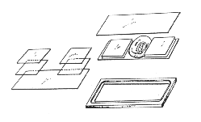

CHAPTER 4 - MICROSCOPIC OBSERVATIONS
VIEWING CHAMBERS
(Source: M. Westerfield)
For higher magnification viewing with a compound microscope, mount the embryos between cover slips. A simple, disposable viewing chamber can be made from two large cover slips (25x60 mm) spaced apart with 2 smaller cover slips (22x22 mm). Using "Crazy Glue" (cyanoacrylate), glue one small cover slip near each end of one of the larger slips. Position the smaller slips so that one edge is flush with the long side of the larger slip. Then glue another small slip on top of each of the first two. Transfer the embryo in a drop of saline to the space in the center of the large slip between the spacers and gently cover with the other large slip. If the embryos need to be anesthetized, transfer them first to a small petri dish with tricaine and then into the viewing chamber. The chamber can be placed on a standard microscope stage by taping it to a glass slide or by using a holder with a recessed edge and a central hole.

Viewing chamber
To remove embryos from the chamber, tip it vertically and dip one corner into a petri dish filled with embryo medium. Direct a stream of medium into the space between the cover slips at the top edge of the chamber with a pasteur pipette. The embryos will wash out into the dish and can be picked up with a fire-polished pasteur pipette.
The Zebrafish Book